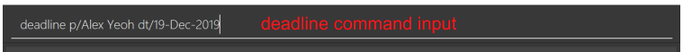
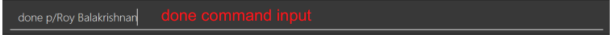

1. Introduction
This project portfolio page (PPP) introduces the project, treasurerPro. The PPP outlines my contributions to the project and showcases the key features I implemented.
1.1. About the project
My team consists of 5 students from Computer Science/Computer Engineering. And the project is part of the module 'CS2103T Software Engineering Project' where we were tasked to develop a basic command line interface desktop application by morphing or enhancing an existing AddressBook desktop application. Our team decided to incorporate and morph the AddressBook application into our application treasurerPro. Our application enables treasurers of Co-Curricular Activities (CCA) Clubs to manage their club finances, reimbursements, inventory and member’s contact details easily. The duration of our project was 13 weeks.
1.2. About our application
treasurerPro consists of home tab, members tab, reimbursements tab, inventory tab, cashier tab and overview tab, a command box for users to input their commands and a response box for Leo which is our lion mascot. Each tab serves a different purpose that helps treasurers and members better manage their club or society’s finances.
This is what our application looks like when it is first opened:
1.3. Icons and formatting
| This symbol indicates extra information or definition. |
| This symbol indicates important information. |
2. Summary of contributions
My role is designing and implementing the features of reimbursement tab as well as testing the functionality of this tab. This section shows a summary of my coding, documentation, and other helpful contributions to the team project.
2.1. Enhancements
-
Extracting reimbursements from transactions grouped by person
-
What it does: The reimbursements are automatically extracted from transaction records if they have not been paid. The reimbursements are grouped by person. And any updates to transactions will also be reflected in reimbursements.
-
Justification: This feature helps the user to quickly view how much money the treasurer needs to pay to a member. The amount and descriptions are aggregated together from transactions for the member. So it will be very easy to manage reimbursements.
-
Highlights: If there are any changes to transactions, the reimbursement records are also updated in accordance with new transaction information.
-
-
Adding a deadline to a reimbursement
-
What it does: The user can use
deadlinecommand to add a deadline to a reimbursement. -
Justification: The user can add a deadline by using
deadlinecommand. The treasurer can easily remind himself when he should pay back to the members when managing a CCA event. -
Highlights: In case of any date changes, the treasurer can use
deadlinecommand to reassign a new deadline to a reimbursement. And if the user is reckless and keys in 30-Feb-2019, our app can correct it to 29-Feb-2019 and adds the date.
-
-
Finding and marking a reimbursement
-
What it does: The user can use
findcommand to find a reimbursement for a member. And the treasurer can mark the reimbursement as done usingdonecommand. -
Justification: If the treasurer wants to check how much he should pay to a member, he can quickly find the details using
findcommand. After paying back the member, he can usedonecommand to remove the reimbursement from the tab. -
Highlights: The
donecommand requires interactions with transactions. Integration is done between transactions and reimbursements to make sure the reimbursed transaction will not be accounted again in reimbursements.
-
-
Sorting reimbursements
-
What it does: Each reimbursement contains the member’s name, amount and a deadline. The reimbursement records can be sorted based on these 3 attributes using
sortcommand. -
Justification: It is useful for the user to keep track of reimbursements and view the reimbursement records according to different priorities.
-
Highlights: The
sortcommand can be extended easily to allow other types of sorting.
-
2.2. Code Contributed
Please click these links to view the code I have contributed for reimbursement tab: Overall Commit Activity and Code, Functional Code , Test Code
2.3. Other Contributions
-
Project management:
-
Created issue labels and milestones v1.1, v1.2 on Github.
-
-
Implementations of new features:
-
Documentation:
-
Community:
-
Reviewed pull requests (With Non-trivial Review Comments) (PR #42).
-
Helped team members to fix bugs (PR #196).
-
Contributed to forum discussion (Example #134) (Example #135).
-
3. Contributions to the user guide
This section contains my contributions to the treasurerPro user guide for the reimbursement tab features. The following is an excerpt from our treasurerPro user guide, showing only part of the additions that I have made. As for the complete additions, please refer to reimbursement tab section in the user guide.
3.1. Adding a deadline to a reimbursement
This command allows you to add a deadline to a member’s reimbursement record.
| You can set the deadline as any valid day you want. It is your responsibility to set a reasonable deadline. |
-
Command:
deadline p/NAME dt/dd-mmm-yyyy -
Example:
deadline p/Alex Yeoh dt/19-Dec-2019 -
Steps:
-
Type the command with all parameters filled in, as shown in the screenshot below:
Figure 2. Input deadline command in reimbursement tab -
Hit
EnterIf the deadline is successfully added, Leo will respond with a success message and the deadline will now be displayed for the specified person’s reimbursement.
Otherwise, Leo will show an error message indicating that the person is not in the reimbursement list. Figure 3. Result of deadline command in reimbursement tab
Figure 3. Result of deadline command in reimbursement tab
-
You must provide the deadline in the format dd-mmm-yyyy e.g. 19-Dec-2019.If an invalid format is inputted, e.g. 01-AAA-2019 or 19-DEC-2019 or -1-Dec-2019, Leo will inform you that the input is invalid. |
If an invalid date is entered, e.g. 31-Feb-2019, the app will round it to 28-Feb-2019
and adds the rounded date as the deadline.
But our app only checks up to 31 in day.
To modify the deadline for a reimbursement, you can use deadline command again to reassign a new deadline to a reimbursement.
|
3.2. Marking a reimbursement as done
This command helps you to mark a reimbursement as done and remove it from reimbursement list.
|
Reimbursements only take transactions that have not been paid. The reimbursement status is not shown in the transaction tab. |
-
Command:
done p/NAME -
Example:
done p/Alex Yeoh -
Steps:
-
Type the command, along with the person’s name whose reimbursement is to be marked as done, as shown in the screenshot below:
Figure 4. Input done command in reimbursement tab -
Hit
EnterThe reimbursement for that person will be removed from the tab, as shown below:
 Figure 5. Result of done command in reimbursement tab
Figure 5. Result of done command in reimbursement tab
-
4. Contributions to the developer guide
This section contains my contributions to the treasurerPro developer guide for the reimbursement tab features. It only shows part of the additions I have made. As for the complete additions, please refer to reimbursement tab section in the developer guide.
The following is an overview class diagram for reimbursement tab:

4.1. Deadline command feature
This command is used to add a deadline date to a reimbursement for a person.
Deadline command requires access to the Model of the person package.
Deadline field should be provided in a valid date format.
The person’s name inputted has to match a person’s name already existing in a Reimbursement.
The following sequence diagram shows the execution of deadline command:
As shown, a user needs to add a deadline to a reimbursement by specifying the person’s name and providing a date.
The DeadlineCommandParser creates a DeadlineCommand with person and deadline date information.
This DeadlineCommand is returned back to LogicManager of reimbursement and is executed by calling addDeadline method in
ModelManager.
After the operations, LogicManager gets updated reimbursement list from ModelManager and displays the deadline in reimbursement list.
After that, the deadline is saved into a reimbursementInformation.txt file.

As shown by the above activity diagram, when a user inputs a person who does not exist in any reimbursement or keys in an invalid data format, our app displays the expected format of the deadline command. Otherwise, when the execution is successful, a response informs the user that deadline is successfully added to the reimbursement.
4.2. Find command feature
This command is used to find a reimbursement that contains the person’s name.
The find command requires access to Model of the person package.
Person field should be provided and the person’s name should exist in reimbursement list.

A user needs to find a reimbursement by providing the person’s name.
As shown in the above figure, FindCommand is executed by calling findReimbursement method in
ModelManager.
After the operations, that reimbursement is returned and reimbursement tab only shows a filteredList which contains this single reimbursement.

The above activity diagram shows the steps needed for find command. The person’s name is checked whether it exists in reimbursement list. If not, our app informs the user that person is not in the list. If command is valid, the found reimbursement is displayed in the tab.
5. Overall design considerations
This section’s table explains the design considerations for some implementations in the reimbursement tab.
| Aspect | Alternative 1 | Alternative 2 | Conclusion and Explanation |
|---|---|---|---|
How |
The |
|
Alternative 2 is chosen.
|
How reimbursement records are saved and read from |
The reimbursement tab saves all the information of transactions that make up a reimbursement into |
The reimbursement tab only saves person’s name, amount and the deadline information into |
Alternative 2 is chosen.
Alternative 2 does not save duplicate information that has already been saved into |
transactionLogic facade class in MainWindow